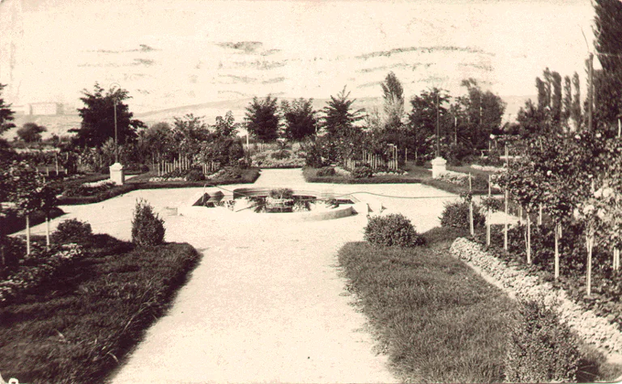
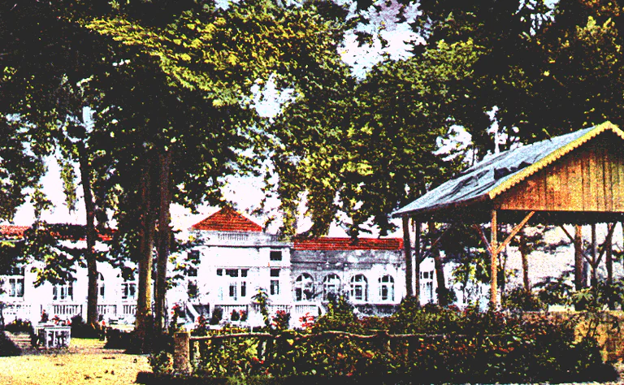
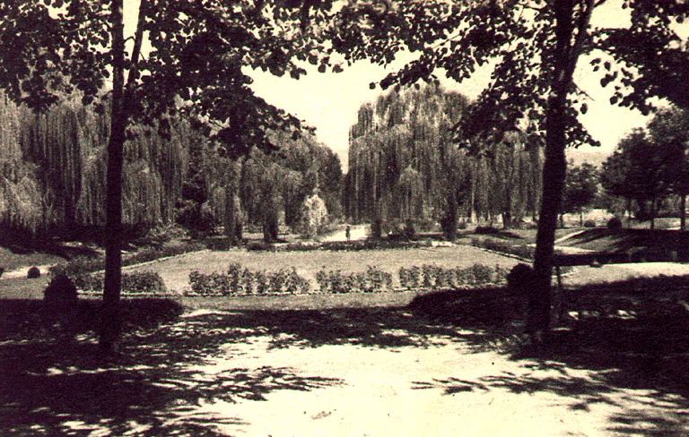

Парк
Филмски преглед бр. 25
- Снимио
- Кочо Недков
- Асистент
- П. Стефановски
- Година
- 1951
- Трајање
- 00:33

Парк Варошки, који се налазио у близини трга, иза старе поште и банке - око 1930. године.

Градски парк - око 1920. године

Градски парк у Скопљу - фонтана. На табли пише: „Забрањено је улазити у парк колима, уводити псе, возити бицикл, газити алеје, кидати цвеће, пуштати децу без пратње“ - око 1920. године.

Фонтана у градском парку у Скопљу.

Фонтана у градском парку зими. У позадини је скопска тврђава - Кале - око 1920. године.

Део градског парка - око 1920. године.

Парк Ислахане - 1920-их.

Ресторан у парку Идадија - део данашњег градског парка (око 1920. године)

Ресторан у парку Идадија - део данашњег градског парка (око 1920. године)

Део градског парка - око 1920. године.

Део градског парка - око 1920. године.

Део градског парка и мали мост, који су звали „Пионирски мостић“. (1920-их)

Филмски преглед бр. 25
 Аквадукт4 разгледнице
Аквадукт4 разгледнице Кале30 разгледница
Кале30 разгледница Мостови60 разгледница
Мостови60 разгледница Кеј58 разгледница
Кеј58 разгледница Трг46 разгледница
Трг46 разгледница Објекти66 разгледница
Објекти66 разгледница Хришћански храмови19 разгледница
Хришћански храмови19 разгледница Муслимански објекти33 разгледнице
Муслимански објекти33 разгледнице Официрски дом29 разгледница
Официрски дом29 разгледница Позориште28 разгледница
Позориште28 разгледница Железничка станица13 разгледница
Железничка станица13 разгледница Школе36 разгледница
Школе36 разгледница Паркови12 разгледница
Паркови12 разгледница Пијаце18 разгледница
Пијаце18 разгледница Улице38 разгледница
Улице38 разгледница Панорама I60 разгледница
Панорама I60 разгледница Панорама II30 разгледница
Панорама II30 разгледница Колажи55 разгледница
Колажи55 разгледница Поплаве9 разгледница
Поплаве9 разгледница Земљотрес27 разгледница
Земљотрес27 разгледница Скопље 200026 разгледница
Скопље 200026 разгледница